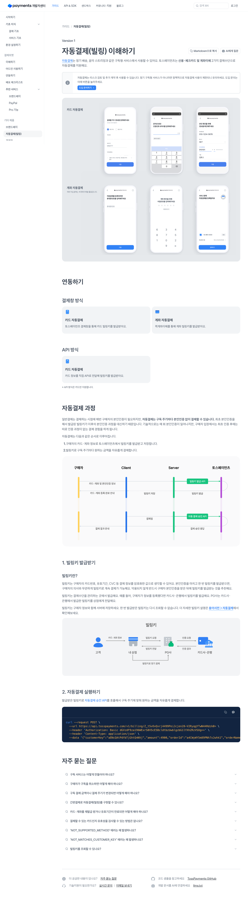
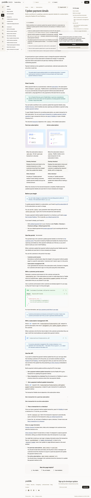

Billing V2 확인 단계 UX 검토
max-w-lg가 이 프로젝트의 스타일 토큰에서는 24px로 해석되어, 모바일에서 창이 화면 아래로 밀리는 실제 결함이 발견됐습니다. 기본 반응형 폭을 사용하도록 교체합니다.
현재 상태

개선 사항
1. 확인 창을 모든 모바일 폭에서 실제로 보이게 한다 ⭐
변경: 결제 확인 바텀시트의 잘못된 폭 제한을 제거합니다. 모바일은 화면 전체 폭을 쓰고, 데스크톱만 기본 520px 제한을 씁니다.
이유: 결제 직전의 금액과 다음 결제일은 반드시 사용자가 읽을 수 있어야 합니다. 폭이 24px로 축소되면 오버레이만 보이고 결제 내용을 볼 수 없어 신뢰를 잃습니다.
모바일: 화면 전체 폭의 확인 시트 데스크톱: 중앙 520px 확인 다이얼로그 오늘 청구 7,900원 다음 결제 월 7,900원 [돌아가기] [7,900원 확인]
2. 외부 인증 전에 금액을 한 번만 확정한다
변경: 플랜 버튼 → 서버 견적 → 금액 확인 → 토스 인증 순서를 유지합니다. 확인 전에는 토스 인증 SDK를 호출하지 않습니다.
이유: 토스 자동결제는 최초 인증 뒤 반복 결제가 가능한 빌링키를 발급하는 구조이므로, 사용자에게 인증을 넘기기 전에 비용과 다음 청구를 명확히 보여줘야 합니다.
3. 즉시 청구와 미래 청구를 분리해 말한다
변경: ‘오늘 청구’와 ‘다음 결제’를 별도 행으로 고정합니다. 업그레이드의 경우 오늘 차액, 다운그레이드는 다음 결제일부터의 금액을 표시합니다.
이유: 결제수단 변경에는 당장 출금이 없을 수도 있고, 플랜 변경은 즉시 또는 다음 주기에 반영될 수 있습니다. 두 금액을 한 문장으로 합치면 오해와 결제 이탈이 커집니다.
참고 근거


유지할 점
- 확인 전에는 외부 결제 인증을 열지 않는 두 단계 흐름
- 오늘 청구와 다음 결제를 분리한 명확한 비용 표기
- 처리 중에는 중복 클릭을 막고 서버에서 상태를 이어 처리하는 방식
구현 판정
| 항목 | 판정 | 조치 |
|---|---|---|
| 결제 확인 창 폭 | 실제 결함 | max-w-lg 제거 |
| 인증 전 금액 확인 | 적합 | V2 브라우저 회귀 테스트로 고정 |
| 금액/일정 구분 | 적합 | 견적 응답의 오늘·다음 결제 금액으로 유지 |